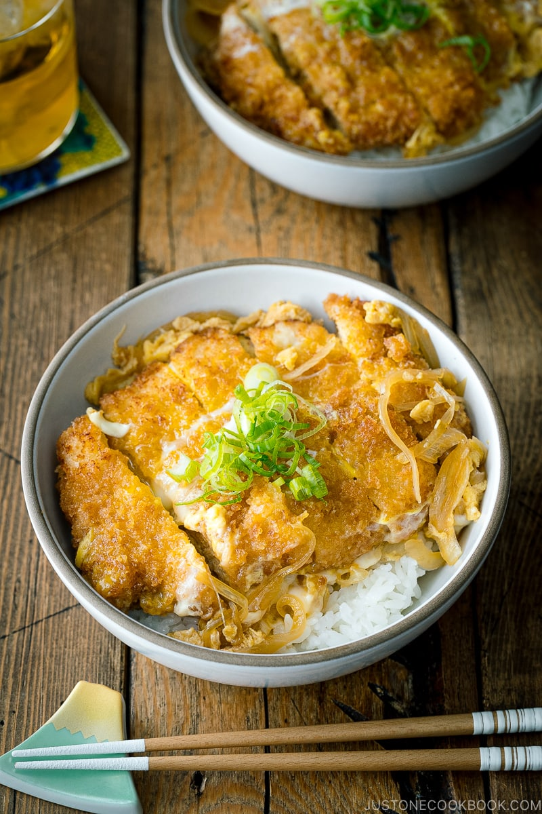

Description
Katsudon is a very popular Japenese dish, consisting of a bowl of rice topped with Tonkatsu, egg,
vegetables and condiments. For this recipe we will be using simmered onions on top.
Ingredients
- Tonkatsu
- Onion
- Eggs
- Broth – dashi (Japanese soup stock), sugar, mirin, and soy sauce
- Green onion
- Freshly steamed, Japanese short-grain rice
Steps
- Make Tonkatsu.
- Cook the onion in the savory broth till tender.
- Place Tonkatsu on top to let it absorb the flavors of the broth.
- Add the beaten egg mixture and cook till just set.
- Serve over steamed rice and topped with green onion.
Attribution
Photo and recipe obtained from justonecookbook.com